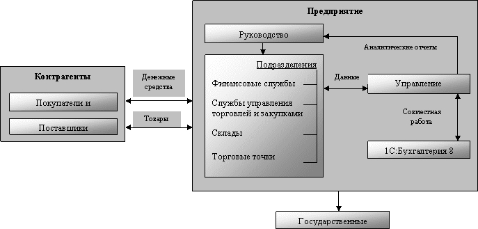

Основные сведения о торговом предприятии
Конфигурация автоматизирует следующие направления торговой деятельности:
- управление продажами (включая оптовую, розничную и комиссионную торговлю);
- управление поставками;
- планирование продаж и закупок;
- управление складскими запасами;
- управление заказами покупателей;
- управление денежными средствами;
- учет и анализ коммерческих затрат;
- управление отношениями с клиентами и поставщиками;
- анализ цен и управление ценовой политикой;
- мониторинг и анализ эффективности торговой деятельности.
В конфигурации 1С:Предприятие 8. Управление торговлей на основе введенных данных по торговым операциям можно произвести оперативную оценку суммы налога на добавленную стоимость с помощью сформированной книги продаж и книги покупок.
Однако конфигурация не предназначена для ведения полноценного бухгалтерского и налогового учета и формирования всех необходимых регламентных документов для предоставления их в государственные налоговые органы. Эти задачи решаются в бухгалтерских конфигурациях системы программ 1С:Предприятие 8. В программе 1С:Предприятие 8. Управление торговлей предусмотрена возможность выгрузки данных на уровне первичных документов в бухгалтерские конфигурации (например, в конфигурацию 1С:Бухгалтерия 8).
Конфигурация позволяет вести учет от имени нескольких организаций на любом количестве складов. Такую "совокупность" организаций в дальнейшем будем именовать торговым предприятием.
Внимание!
В базовой версии отключена возможность ведения учета деятельности нескольких организаций в одной информационной базе. Ведение учета деятельности нескольких организаций возможно только в отдельных информационных базах.
Автоматизируемое торговое предприятие можно представить в виде следующей схемы.
Торговое предприятие состоит из различных подразделений, сотрудники которых обеспечивают взаимодействие предприятия с клиентами (поставщиками, покупателями и заказчиками) и предоставляют руководству различные отчеты о результате своей деятельности. На основе результатов торговой деятельности формируются регламентные отчеты, которые предоставляются в государственные органы.
Использование конфигурации 1С:Предприятие 8. Управление торговлей позволяет произвести комплексную автоматизацию всех служб торгового предприятия.
Финансовые службы торгового предприятия смогут проводить комплексный анализ не только реальных денежных потоков при оформлении торговых операций, но и планировать эти потоки на основе данных о предстоящих поступлениях и расходах денежных средств.
Менеджеры служб управления торговлей и закупками товаров смогут отследить весь "жизненный цикл" товара, начиная с момента планирования закупок товаров на основе анализа различных потребностей в товаре до момента отгрузки товаров клиентам. При этом в конфигурации отслеживается весь цикл взаимоотношений с клиентом, начиная с первого обращения клиента в торговую компанию. Автоматизируется полный цикл операций как оптовой, так и розничной торговли с использованием различного торгового оборудования.
Работники склада смогут вести детальный оперативный учет товаров на складах. При этом обеспечивается полный контроль товарных запасов, оформление всех необходимых документов. Для автоматизации учета товаров на складе может применяться современное торговое оборудование: сканеры штрих-кодов, терминалы сбора данных, RFID-считыватели. Реализована также возможность работы с удаленными торговыми точками и розничными магазинами.
Руководитель предприятия сможет получать разнообразные отчеты, которые в кратком и удобном виде показывают текущее состояние дел в торговом предприятии.
Для сдачи отчетности в государственные органы оформленные в программе 1С:Предприятие 8. Управление торговлей первичные документы выгружаются в конфигурации, которые предназначены для ведения бухгалтерского учета (1С:Бухгалтерия 8.3,С:Бухгалтерия 8.2, 1С:Бухгалтерия 8.0, 1С:Бухгалтерия 7.7, 1С:Предприниматель 7.7, 1С:Бухгалтерия 7.7. Упрощенная система налогообложения).
На основе данных первичных документов в бухгалтерских конфигурациях формируются регламентированные отчеты, которые сдаются в государственные органы.
Конфигурация 1С:Предприятие 8. Управление торговлей состоит из различных подсистем, которые в совокупности решают задачи торгового предприятия.
Упрощенная схема бизнес-логики конфигурации представлена на рисунке.

Основной концепцией бизнес-логики конфигурации является то, что каждая подсистема, входящая в данную схему, выполняет свои строго определенные функции, но в то же время все подсистемы взаимосвязаны между собой.
Так, например, при планировании продаж используются данные о товарах, заказанных покупателями, и данные о текущих остатках на складах. С другой стороны, данные о запланированных продажах используются при анализе выполнения плана (например, для сравнения плановых показателей с фактическими показателями).
Мы рассмотрим основные возможности каждой подсистемы, входящей в состав конфигурации, с точки зрения автоматизации торговых операций. В конце каждой главы будут приведены примеры оформления торговых операций и список отчетов по подсистемам, с помощью которых можно проанализировать работу подсистемы.